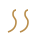

Meditation
Meditation
All
Mindfulness
Concentration
Loving kindness
Visualization
Movement
Sound
Self inquiry
Deep relaxation
Mindfulness
Breath Awareness
Anapanasati
Body Scan Meditation
Vipassana Body Scan
Open Awareness
Choiceless Awareness
Concentration
Trataka
Candle Gazing
Mantra Repetition
Japa
Breath Counting
Susokukan
Loving kindness
Metta Bhavana
Loving-Kindness Meditation
Tonglen
Giving and Taking
Compassion Meditation
Karuna Bhavana
Visualization
Chakra Visualization
Chakra Dhyana
Inner Sanctuary
Guided Imagery
Loving Light Visualization
Light Body Meditation
Movement
Walking Meditation
Kinhin

Standing Meditation
Zhan Zhuang
Mindful Movement
Qigong Flow
Sound
Nada Yoga
Inner Sound Meditation
Mantra Chanting
Kirtan
Sound Bath
Singing Bowl Meditation
Self inquiry
Self-Inquiry
Atma Vichara
Zazen
Shikantaza
Noting Practice
Vipassana Noting
Deep relaxation
Yoga Nidra
Yogic Sleep
Progressive Muscle Relaxation
Jacobson's Technique
Autogenic Training
Self-Relaxation Training
Nothing found. Try another word.
Install
Not now
Address copied